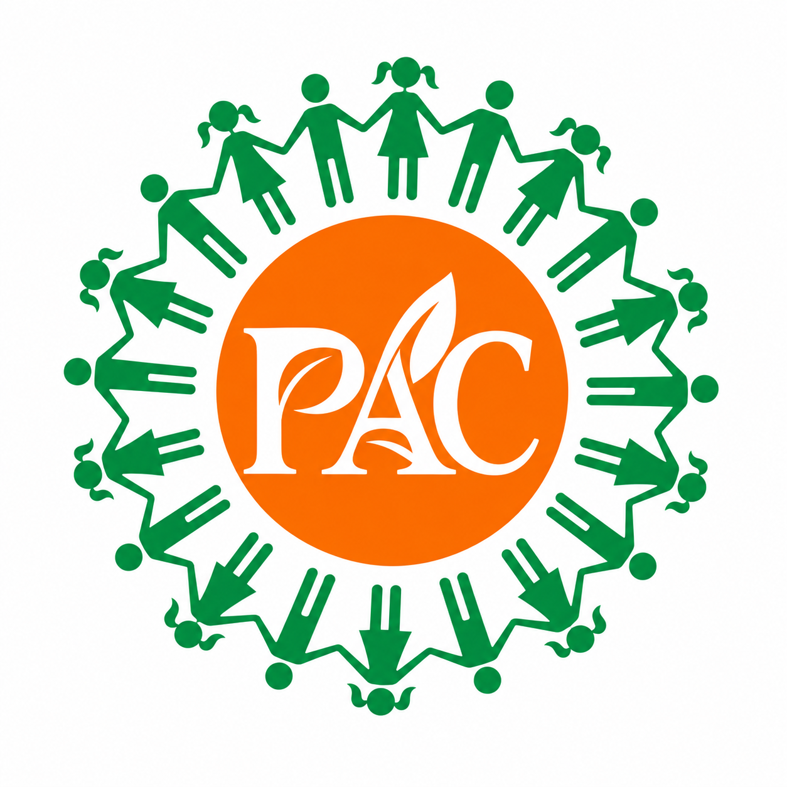

सरसोंतेल
शीघ्र उपलब्ध
कच्ची घानी सरसों तेल
धीमी गति से निकाला गया तेल, जिसमें सरसों की प्राकृतिक सुगंध और स्वाद सुरक्षित रहे।
जानकारी लें →
PROUT Agro CommodityFarm-grown essentials
Explore our complete product range
थोक एवं खुदरा आपूर्ति के लिए पूछताछ स्वीकार की जा रही है • नई फसल का गेहूँ और सरसों तेल शीघ्र उपलब्ध होगा • सभी उत्पाद सहकारी किसानों के अपने खेतों से
हमारे खेतों की उपज
बिचौलियों की लंबी श्रृंखला नहीं—उत्पादन और तैयारी की हर अवस्था हमारे किसान सदस्यों की देखरेख में।
धीमी गति से निकाला गया तेल, जिसमें सरसों की प्राकृतिक सुगंध और स्वाद सुरक्षित रहे।
जानकारी लें →चुने हुए दानों वाला पौष्टिक गेहूँ, घर की मुलायम और स्वादिष्ट रोटियों के लिए।
जानकारी लें →धूप में सुखाए, साफ किए और सावधानी से तैयार किए गए भरपूर स्वाद वाले मसाले।
जानकारी लें →साझी मेहनत, साझा उन्नति
PROUT Agro Commodity एक किसान-स्वामित्व वाली सहकारी पहल है। हम संसाधन, ज्ञान और अवसर साझा करके अच्छी उपज उगाते हैं और हर परिवार तक ईमानदार खाद्य सामग्री पहुँचाते हैं।
सहकारिता के बारे मेंहमारी कार्यप्रणाली
हर चरण में किसान की निगरानी और गुणवत्ता का ध्यान।
मौसम और मिट्टी के अनुरूप जिम्मेदार खेती।
स्वाद और गुणवत्ता के लिए उचित समय का चुनाव।
छँटाई, सफाई और छोटी खेप में प्रसंस्करण।
खुदरा, परिवार और थोक खरीदारों तक आपूर्ति।
उपज संबंधी पूछताछ
घरेलू, खुदरा या थोक आवश्यकता के लिए हमें लिखें। उपलब्धता और मूल्य की जानकारी हमारी टीम साझा करेगी।